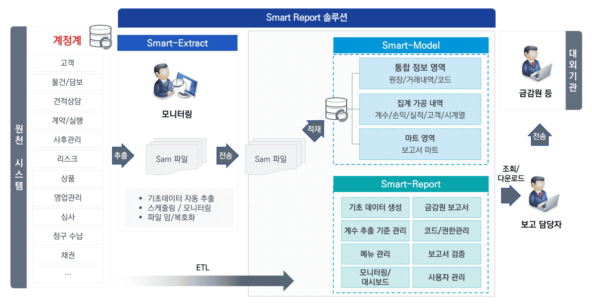

Smart Report
Smart한 대외보고서 자동 제작 솔루션
Smart Report는 캐피탈사를 위한 솔루션으로 금융감독원,
한국은행 등의 대외보고서 업무개선을 위한 대외보고서 자동
제작 솔루션입니다.
GRS 화면 예시

대시보드
현황 화면
표준화된 대시보드를 제공하여 보고서 생성 및 제출 현황을
한눈에 파악할 수 있습니다. 직관적인 인터페이스로
업무 효율을 높입니다.
보고서에 특화된 통합 모델을 기반으로 원천 자료를
집계/요약/가공하여 정형화된 대외보고서를 자동으로
생성합니다. 이를 통해 보고서 관련 업무의 효율성 및 산출된
보고서 계수의 신뢰성과 정합성을 제고합니다.

원천데이터 추출을 위한 Smart-Extract, 대외보고용 통합 데이터
모델을 지원하는 Smart-Model 및 금감원보고서
화면인 Smart-Report로 구성되어 있습니다.
대외보고서는 총 88개의 화면으로 시스템관리 3개, 기준정보관리
3개, 자료생성관리 5개, 금감원보고서 결과조회 77개의 화면으로
구성됩니다.
금감원보고서 9개 영역 77종의 생성을 지원하고 있으며, 생성유형에 따라 배치생성 60종, 업로드생성 17종으로 구성됩니다.
업무 필요성 보고서 대상 영역에 따라 지원대상 보고서 추가/삭제가 용이합니다.